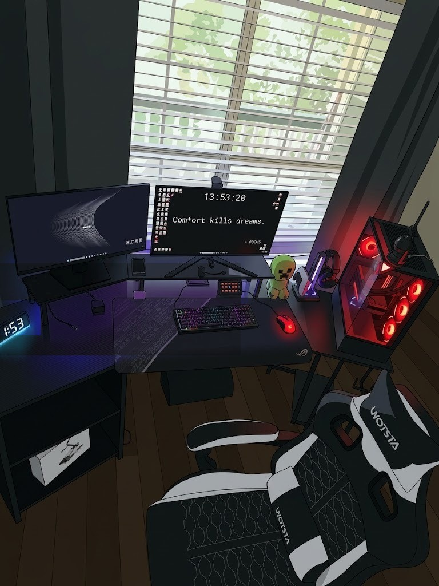

Color fijo
--:--
Colores rápidos
Espacio = encender/apagarR 168 · G 85 · B 247
Favoritos
Clic derecho sobre un favorito para eliminarlo.
Fuente de audio
Al iniciar, elige Pantalla completa y activa «Compartir también el audio del sistema».
Estilo
Las tiras copiarán los colores de tu pantalla: ideal para juegos y películas
Zona de la pantalla
Cálculo del color
Dispositivo
- Nombre
- —
- Servicio / característica
- —
- Modo de escritura
- —
- Perfil de protocolo
- —
Comportamiento
Consola
¿No aparece la tira?
- Cierra LotusLamp X en el móvil (o apaga su Bluetooth): estos controladores solo aceptan una conexión a la vez.
- Comprueba que el Bluetooth del PC está activado.
- Activa «Mostrar todos los dispositivos» y busca nombres como ELK-BLEDOM, MELK-… o LEDBLE.
- No la emparejes desde la configuración de Windows; conecta solo desde aquí.